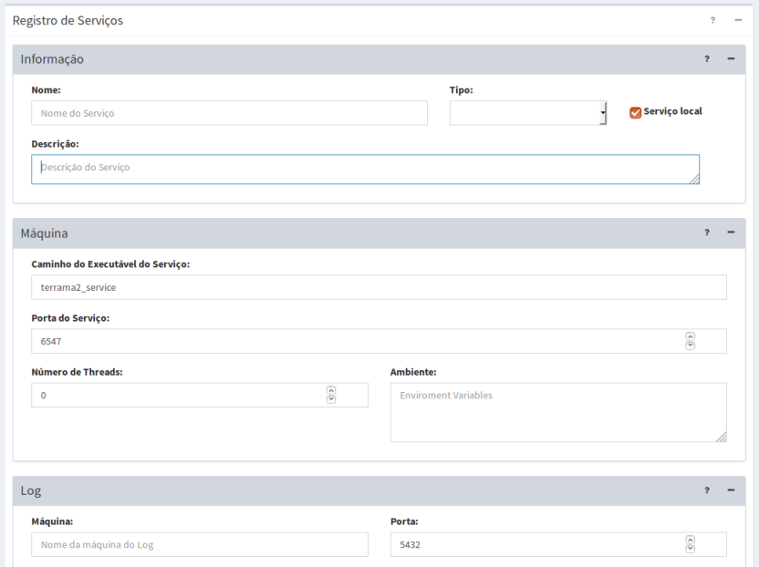

Adicionar Serviço
Para adicionar um novo serviço é necessário que um usuário administrador esteja conectado. No menu “Administração” escolha “Serviços” para a lista de serviços disponíveis ser apresentada na área de trabalho. Clique no botão “ + ” para adicionar novo serviço. Utilize o botão “Salvar” para salvar o serviço. Não é permitido nome de serviço em duplicidade. Botão “Cancelar” volta à tela anterior sem salvar o serviço. A Figura 2.5 mostra a área de trabalho para adicionar novo serviço. Detalhes de cada campo a seguir.
Os parâmetros fornecidos ao adicionar/editar um serviço podem ser verificados. Clique em “Verificar Conexão”. No topo da janela uma lista dos itens verificados é apresentada. Caso ocorra algum erro, a mensagem ficará em vermelho. Detalhes de cada campo a seguir.

Figura 2.5 – Módulo de Administração: parâmetros de novo servidor.
Registro de Serviço – Informação:
- Nome: Defina o nome do serviço. O tamanho máximo do nome é de 100 caracteres.
- Tipo: Escolha o tipo entre Coleta, Análise, Visualização, Interpolação ou Alerta. Dependendo do tipo escolhido, alguns parâmetros específicos serão apresentados para preenchimento.
- Descrição: Campo não obrigatório para descrição do serviço. O tamanho máximo da senha é de 250 caracteres.
Registro de Serviço – Máquina:
- Endereço (somente se servidor for remoto): Nome da máquina SSH (Secure Shell – permite a transmissão de dados criptografada de uma máquina para outra). O tamanho máximo do endereço é de 250 caracteres.
- Porta (somente se servidor for remoto): Porta do servidor SSH. Normalmente utilizada a porta 21.
- Caminho do Executável do Serviço: Caminho completo do executável onde foi instalada a plataforma. Se não foi alterado o local de instalação da plataforma basta deixar informado apenas o nome do executável, isto é, “terrama2_service”. O caminho completo no Linux deve ser “/opt/terrama2/4.0.0/bin/terrama2_service”, no Windows deve ser “C:/Arquivos de Programas/terrama2/4.0.0/bin/terrama2_service.exe” e se Mac deve ser “(em desenvolvimento) “
- Usuário (somente se servidor for remoto): Nome de usuário do servidor SSH deve ser informado.
- Porta do Serviço: Número da porta onde será executado o serviço. Cada serviço deve estar em uma porta diferente. Automaticamente, um número diferente, acima de 6547 é proposto. Não é permitido dois serviços na mesma porta e uma mensagem de alerta avisará caso isso ocorra.
- Número de Threads: Número que permite o computador dividir uma tarefa em duas ou mais tarefas de modo a serem executadas concorrencialmente. O valor 0 (zero) permite que o computador use o recurso da melhor maneira se houver.
- Ambiente: Permite especificar variáveis ambientais caso necessário.
Registro de Serviço – Log:
- Endereço: Nome da máquina com o banco de dados PostgreSQL onde será criada a tabela de Log de cada serviço com status do mesmo. Se a máquina for local utilize “localhost”.
- Porta: Porta do servidor PostgreSQL. Normalmente utilizada a porta 5432.
- Usuário: Nome de usuário do servidor PostgreSQL deve ser informado.
- Senha: Senha de usuário do servidor PostgreSQL deve ser informado.
- Nome da Base de Dados: Nome do banco de dados para armazenar as tabela de Log. O banco padrão da plataforma é o “terrama2”.
Registro de Serviço – Parâmetros do servidor de mapas: (se serviço de Visualização)
- Endereço: Endereço do servidor de mapas Geoserver utilizado para prover os dados para o módulo de monitoramento web. Se local, o servidor normalmente utilizado: “http://localhost/geoserver”.
- Porta: Porta do servidor Geoserver. Normalmente utilizada a porta 8080.
- Usuário: Nome de usuário do servidor Geoserver deve ser informado. O valor padrão da instalação é “admin”. Se outro usuário verifique com o administrador que realizou a instalação.
- Senha: Senha de usuário do servidor Geoserver deve ser informado. O valor padrão da instalação é “geoserver”. Se outro usuário verifique com o administrador que realizou a instalação.
Registro de Serviço – Parâmetros de E-mail (se serviço de Alerta)
- Máquina: Endereço do servidor SMTP (Simple Mail Transfer Protocol) responsável por enviar as notificações por e-mail. Exemplo do GMAIL é smtp.gmail.com. Se outro servidor verifique com o administrador de sua rede.
- Porta: Porta do servidor SMTP. Para GMAIL utilizada a porta 587. Se outra porta verifique com o administrador de sua rede.
- Usuário: Nome de e-mail do usuário.
- Senha: Senha do e-mail do usuário.
Created with the Personal Edition of HelpNDoc: Easily create Qt Help files